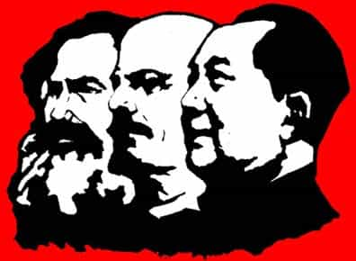

< < < Back
How The Globalist Establishment Came Into Being – Return Of Kings
We are witnessing the United States and Europe become increasingly tumultuous. What we are not being told is a similar tumultuousness is building in China. While a number of us are aware that this is caused by the global establishment, we need to be aware of a few things about them.
Communism and fascism

Anyone can be a member of the global establishment. They little from whence members of their group originate. No global establishment insider has ever turned in another insider. The global establishment orchestrated the rise of communism, fascism, feminism and other ideologies. The books The Rise of the Fourth Reich by Jim Marrs and Wall Street and the Bolshevik Revolution by Anthony Sutton discuss how the Russian Revolution at the beginning of the 20th century was financed by American capitalists.
The authors of The Nazi Hydra in America, Glen Yeadon and John Hawkins, discuss how the rise of Adolf Hitler was financed by British and American Capitalists through various subsidiaries. Auschwitz was built with the understanding of American and British Capitalists that Auschwitz would be a slave labor camp for the making of products to be sold to the public and to world governments. The pinning of events and conspiracies upon certain groups or persons (Jews, whites, free masons, etc.) is also an act of the global establishment.
The global establishment is old. In his book The Creature From Jeykll Island, G. Edward Griffin discussed how they immediately tried to insert itself into the United States, at its inception, but the attempt was thwarted. Their efforts in the 18th and much of the 19th centuries was a struggle for the economic and political control of the United States government and the United States. That battle was ultimately lost with the passage of the Federal Reserve Act in 1913 that established the Federal Reserve System.

Fear keeps you from acting against the global establishment.
After World War II, many communists in the United States would seek direction from Moscow. Dr. Bella Dodd was a member of the National Committee of the Communist Party in the U.S., and later stated to W. Cleon Skousen, which he documents in his book, The Naked Capitalist, “I think the Communist conspiracy is merely a branch of a much bigger conspiracy!”
Dr. Dodd was confused because when asking for direction from Moscow, the American Communist Party was told to contact one of three people in the Waldorf Towers in New York. Dr. Todd found it interesting that these men were neither Russian nor Communist, but were wealthy American capitalist and whatever direction they gave the American Communist Party, Moscow always supported and ratified it. In his book, The Making of America, W. Cleon Skousen documents how the ideas of Communism were tried before Karl Marx was even born.
Several authors, such as W. Cleon Skousen, who was opposed to the global establishment in his books The Naked Communist and The Naked Capitalist, have documented how Moscow and Beijing are under the control of a higher entity. Carol Quigley, author of Tragedy and Hope, documents how this elite group has been behind major world events. Professor Quigley, an insider that supported the global establishment, writes of how the global establishment seeks to control the entire world. Professor Quigley also boasts that the tide cannot be turned and anyone that goes along with the tide will eventually find themselves in a period of man-made peace and prosperity (under their control, of course).
Agents of the global establishment were the ones to advocate trade with Communist China during the Nixon era. There are few governments at this time which are not under their control or influence.

The wealthy advocate socialist
Yanis Varoufakis, a former Greek Minister of Finance, referred to the global establishment as ruling insiders. Yanis was told that no insider has ever turned in another insider, insiders are not allowed to make any significant changes, and outsiders are vilified and thrown out. This is why the global establishment hates Julian Assange. Forward to 01:02:00:
Why is it that men such as Bill Gates, Warren Buffett, and James Dimon (CEO of JPMorgan Chase) advocate socialism? These men, among other wealthy people, are part of the global establishment agenda, whether directly or indirectly is irrelevant. The super wealthy hide their money behind layers of trusts, foundations, companies, and other legal organizations. They wish to remain hidden.
Their foundations are legal ways of shielding their wealth from taxation, not because they have benevolent hearts. They always advocate help be offered through government via more control andmore taxation of people such as you and me.
What you can do
The global establishment hates the idea of private property, for you and me. They would secretly own the whole world and make us work until we are no longer deemed of worth. They hate the U.S. Constitution and have been trying to overthrow it for over 200 years. No other nation on earth is offered the protections the U.S. Constitution gives to the people. The global establishment wants to break down national borders and implement economic zones.
The current system cannot be saved; too many laws and court rulings would have to be overturned. We must return to our foundation. We begin that move to the foundation by first becoming aware of our current situation. Most readers of Return of Kings are at least somewhat aware of our current situation. We know that feminism, political correctness, and various other ideologies are ways to convince the world population to accept the prison and eventual extermination of themselves and their neighbors.
Masculine men are a threat to the global establishment because those in power are more likely to be challenged by men. Hence the programs and other directives to feminize men. Most women are inclined to simply go along what is perceived as the established authority.
The global establishment frequently works both sides of an issue, for their own gain. It is time to stop thinking linearly. Trump is currently being worked. The global establishment considers Trump an aberration, hence the media is attempting to discredit and make Trump appear to be incompetent. While we are aware of some of the methods of the global establishment, be aware the opposite of something is not always what it seems. The opposite of war is not peace, and the opposite of slavery is not freedom.
Read More: The Establishment’s Narrative Is In Shambles